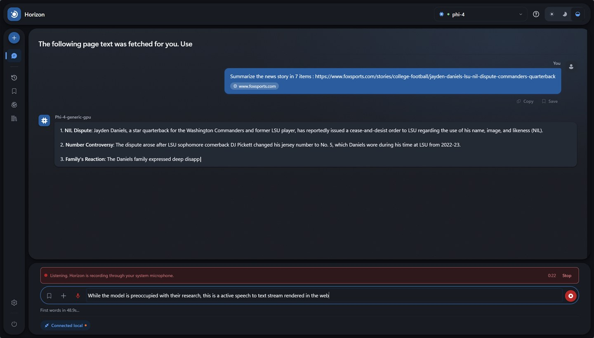
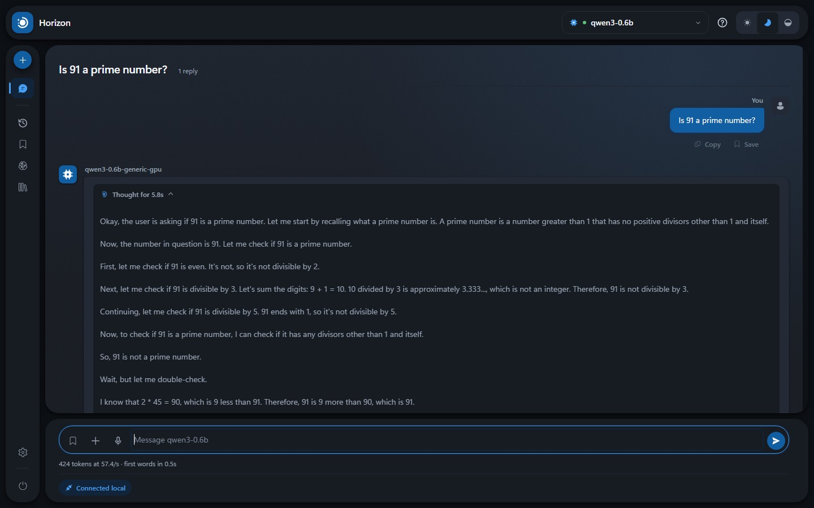
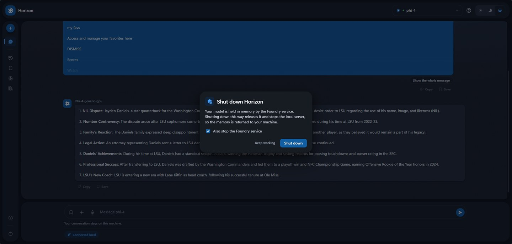

A private, air-gapped AI workspace built for Microsoft Foundry Local — chat, documents, prompts, memory and models, running entirely on your own hardware.
Strong claims, so each one is checkable.
No telemetry, no analytics, no account, no API key.
Every request is logged, in full, where you can read it. They all go to
127.0.0.1.
Dictation runs on a speech model on this machine. What you say lands in the message box for you to read before anything is sent.
Reading a page you asked for is the only outbound act. The badge turns amber and names the host while it happens. Otherwise, pull the cable and carry on.
Real screenshots, on real hardware. Nothing tidied up afterwards — click any of them to see it full size.



There is more than fits here. The user guide walks through the lot.
Worth being honest early.
…you want one interface across many providers — OpenAI, Anthropic, Ollama, Foundry Local. Both are mature and have far more features than this. Point them at Foundry Local's endpoint and they work.
…you want the opposite trade: one runtime, understood properly. It starts and stops the service, loads and unloads models, finds the port again when Foundry restarts, and gives the memory back when you are done. No Docker, no Electron.
All of it local. Your browser never talks to Foundry directly — it only talks to the small Node.js server in the project folder.
foundry transcribe → your microphone dictation only
Foundry picks a new port on every restart. Horizon finds it again mid-session, without losing your conversation.
Speech takes the second branch because Foundry offers it only as a command, not over HTTP. Foundry opens the microphone, not the page, so your browser shows no recording indicator — Horizon shows its own.
Two one-time installs, then a double-click. Pick whichever column sounds like you.
If you have never used a command line, follow this.
Download and run each installer. Both links go to the official source:
Microsoft Foundry Local
learn.microsoft.com
Node.js — choose the LTS version
nodejs.org
Accept the defaults in both, and restart if either asks.
On the project page, click the green Code button, then Download ZIP.
Windows marks files that come from the internet. Clearing it on the ZIP saves clearing it on every file inside.
Right-click the ZIP → Properties → tick Unblock → OK. Then right-click → Extract All… into a folder that belongs to you, such as Documents\horizon.
No Unblock box? Nothing to clear — carry on.
A small black window opens — that is the server, and it stays open while Horizon runs. Your browser opens at http://127.0.0.1:3000.
The page walks you through choosing and downloading a model. If Windows says “Windows protected your PC”, click More info → Run anyway.
Do not close that black window to quit. It is the server: closing it kills Horizon mid-request and leaves the model orphaned in memory. Use the power button in Horizon for a safe exit.
Cloning skips the unblock step — Git-created files are not tagged.
winget install Microsoft.FoundryLocal winget install OpenJS.NodeJS.LTS
No winget? It ships with Windows 11 and recent
Windows 10, but not every machine has it. Use the installers in the
column on the left instead — same software, same sources.
git clone https://github.com/itstejaswi/horizon cd horizon .\"Start Horizon.bat"
One dependency: node-pty, which opens a terminal for the speech command and does nothing else. It arrives ready-built for Windows — no compiler, no build tools, nothing to set up.
.\scripts\Start-Horizon.ps1
Same thing, but it also starts Foundry and pre-loads the model so
the first message is quick. -WebPort, -ModelAlias and
-NoBrowser are accepted.
npm test # regression tests, no model needed npm run check npm run build
The suite runs against a stub — no model, no GPU, no network.
| Requirement | Detail |
|---|---|
| Windows | Windows 10 or Windows 11, on Intel/AMD or Arm. macOS support is on the roadmap, not here yet. |
| PowerShell | 5.1 or later — already included with Windows |
| Node.js | 18 or later. The one dependency ships ready-built, so npm install compiles nothing. |
| Foundry Local | Installed separately. Horizon starts and stops it, but does not install it. |
| RAM | Minimum 8 GB. |
| Disk | 200 MB for Horizon and its runtime, plus 700 MB for the speech model if you want dictation, plus the size of the model you choose. |
| Internet | To install, and to download each model once. |
| Microphone | Only for dictation. Off until you switch it on. |